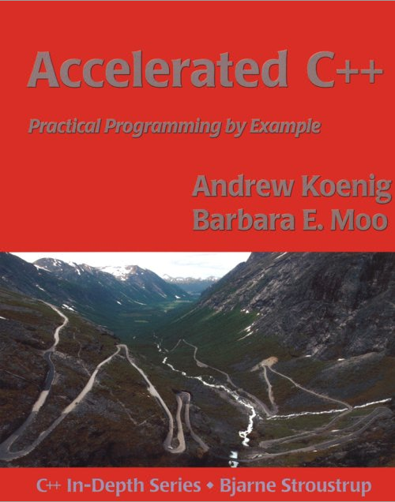
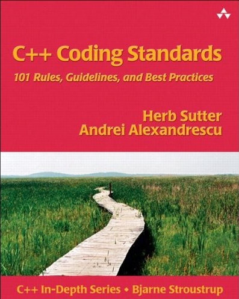
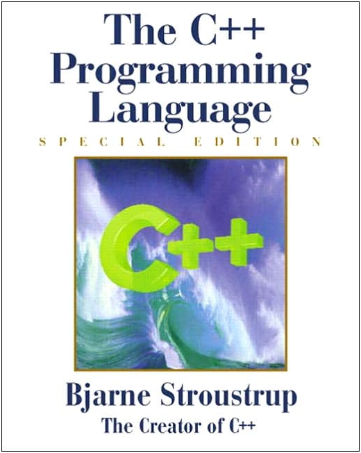

First of all we will focus on learning the details of the language by carefully reading through the C++ book, namely The C++ Programming Language by Bjarne Stroustrup. The study group will be quiz-driven. We read 50 to 100 pages of C++ theory every week. Then we meet for one hour to solve and discuss related C++ questions. In the meetings we will also discuss good and bad practices and we will learn about the hidden gems and pitfalls of C++.
This is certainly not a beginners course in C++ and programming - it is an advanced study group. We will keep a very high pace and everybody is expected to prepare themselves properly before each meeting. The amount of preparation needed before each meeting depends on your background. Some might spend just 1-2 hours skimming through the pages of theory before each meeting, while others will need to do a lot of additional practical programming and exercises to be fully prepared for the meetings.
As a pre-requisite for this study group everybody is expected to have completed the book Accelerated C++ by Andrew Koenig and Barbara E. Moo. This is probably the best introductory text to modern C++, and it focuses on how the language should be used more than how it might be used.
Each member of the study group will get a copy of these three books:
|  |  |  |
To prepare for each meeting, please read through the following chapters in the Stroustrup book:
Week #1 : (64 pages)
Chapter 1: Notes to the Reader
Chapter 2: A Tour of C++
Chapter 3: A Tour of the Standard Library
Questions for this meeting (quiz, quiz w/notes)
Week #2: (74 pages)
Chapter 4: Types and Declarations
Chapter 5: Pointers, Arrays, and Structures
Chapter 6: Expressions and Statements
Questions for this meeting (quiz, quiz w/notes)
Week #3: (78 pages)
Chapter 7: Functions
Chapter 8: Namespaces and Exceptions
Chapter 9: Source Files and Programs
Questions for this meeting (quiz, quiz w/notes)
Week #4: (78 pages)
Chapter 10: Classes
Chapter 11: Operator Overloading
Questions for this meeting (quiz, quiz w/notes)
Week #5: (54 pages)
Chapter 12: Derived Classes
Chapter 13: Templates
Questions for this meeting (quiz, quiz w/notes)
Week #6: (72 pages)
Chapter 14: Exception Handling
Chapter 15: Class Hierarchies
Questions for this meeting (quiz, quiz w/notes)
Week #7: (149 pages)
Chapter 16: Library Organization and Containers
Chapter 17: Standard Containers
Chapter 18: Algorithms and Function Objects
Chapter 19: Iterators and Allocators
Questions for this meeting (quiz, quiz w/notes)
Week #8: (108 pages)
Chapter 20: Strings
Chapter 21: Streams
Chapter 22: Numerics
Questions for this meeting (quiz, quiz w/notes)
Week #9: (100 pages)
Chapter 23: Development and Design
Chapter 24: Design and Programming
Chapter 25: Roles of Classes
Questions for this meeting (quiz, quiz w/notes)
Week #10: (176 pages)
Appendix A: The C++ Grammar
Appendix B: Compatibility
Appendix C: Technicalities
Appendix D: Locales
Appendix E: Standard-Library Exception Safety